Turkish photographer İlker Karaman likes to use geometric shapes and circles in his photos, and he presents them with strong contrast. He also especially likes yellow. He waits in front of yellow walls, lines, and sculptures to capture these frames. Yellow is an attractive color. It draws the eye and improves the first impression of a photo.
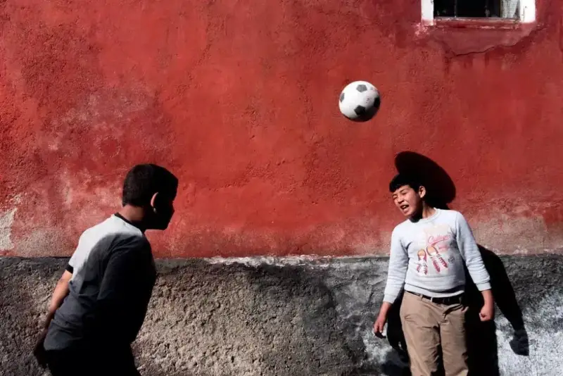
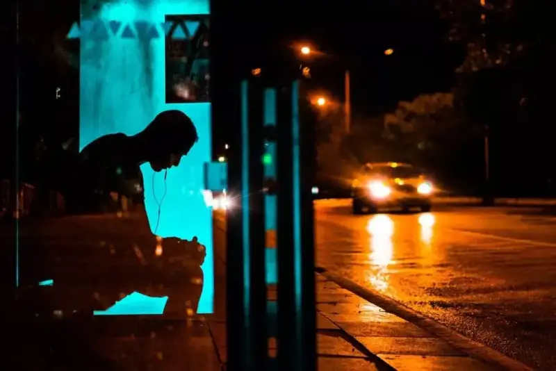
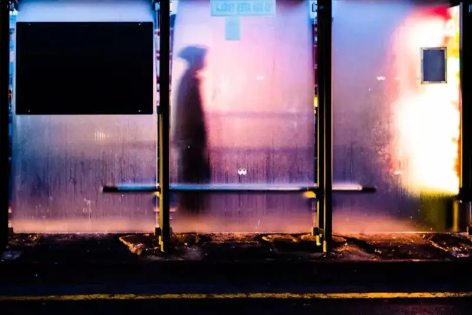
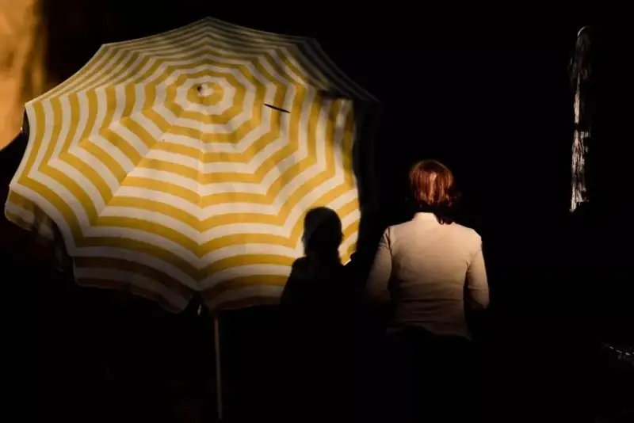
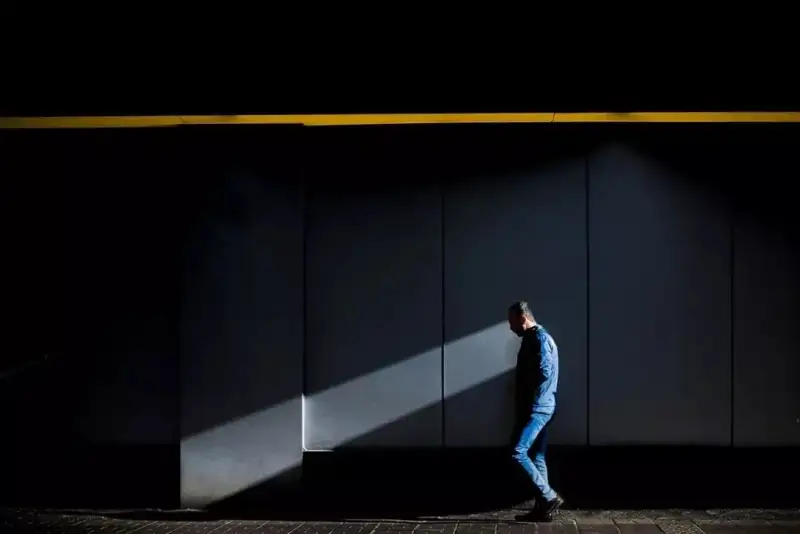
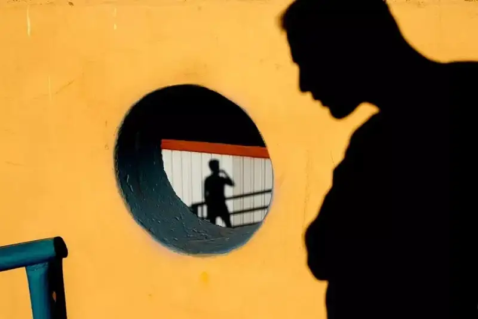
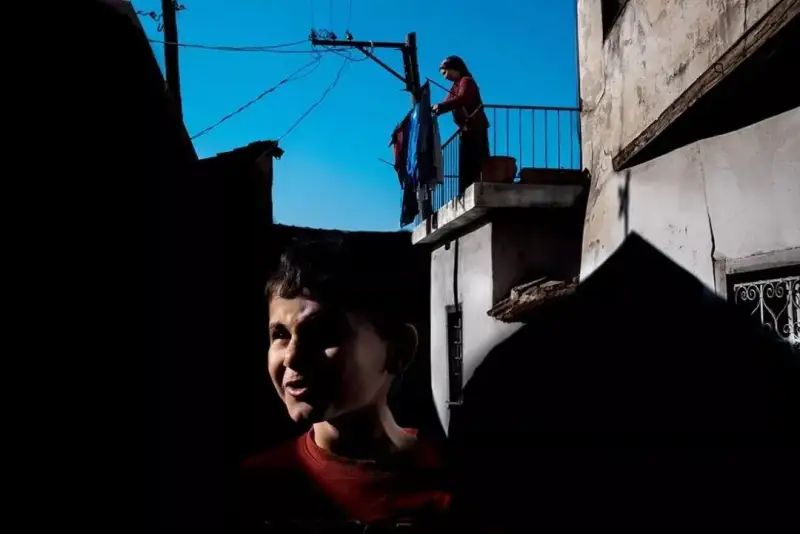
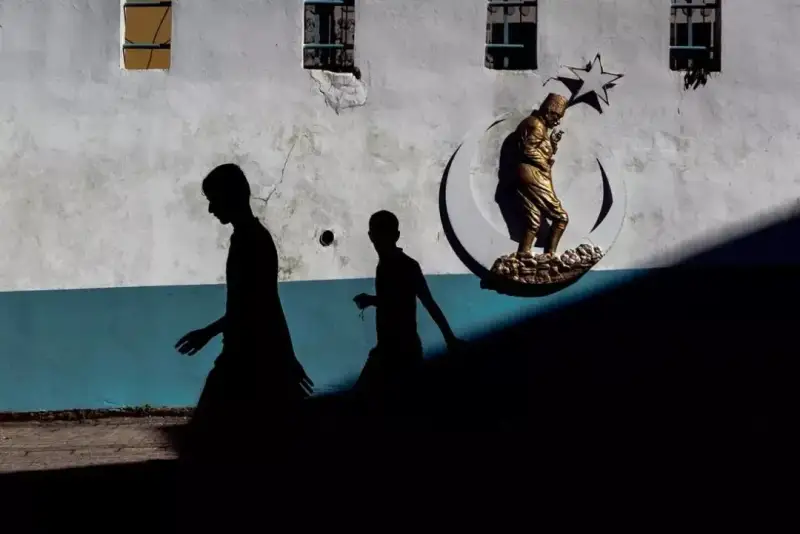
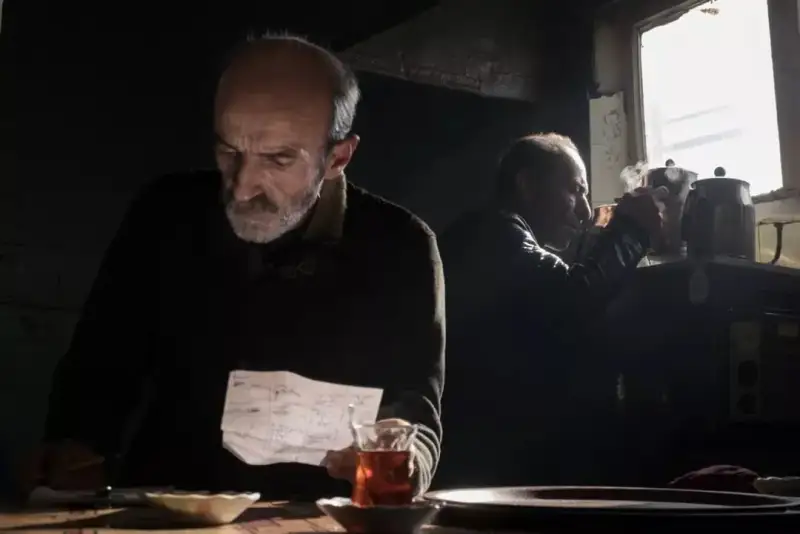
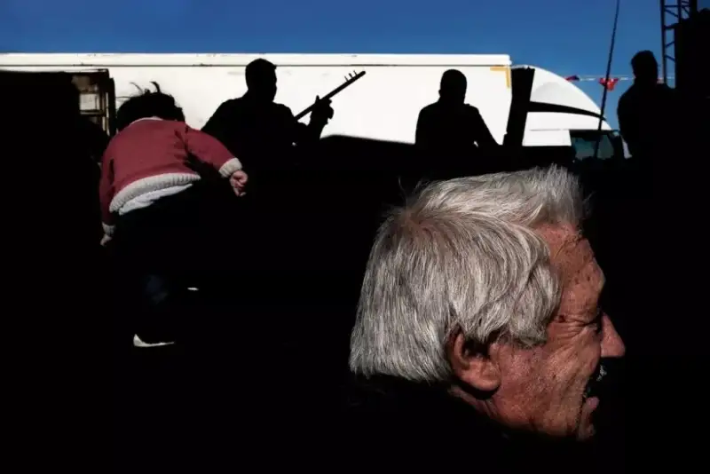
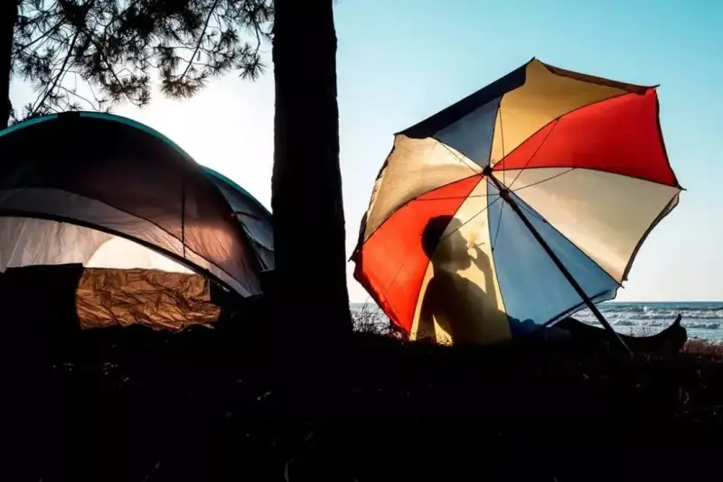
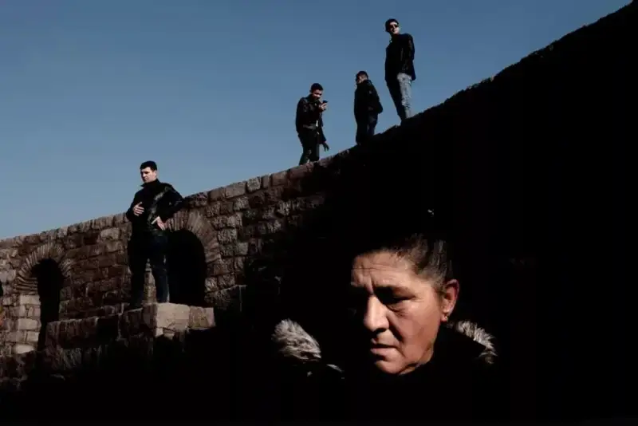
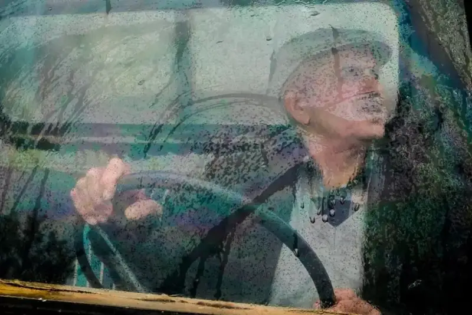
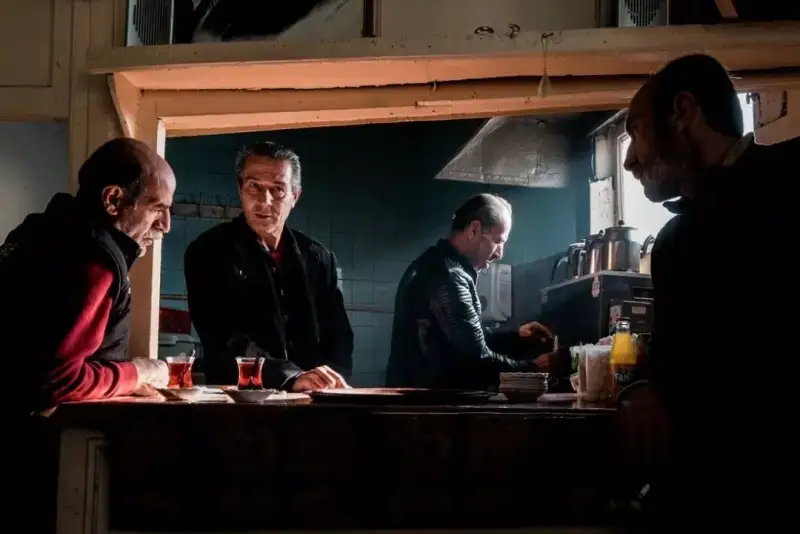